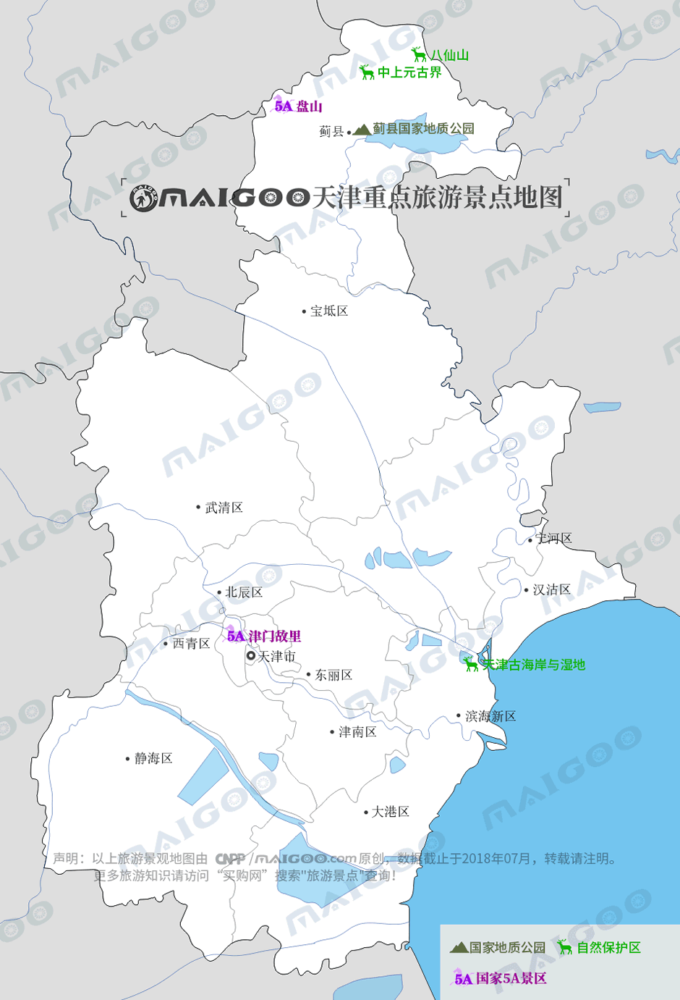

| | | | | |
| - | - | - | - | - |
|<b>别名</b>|津沽、津门||<b>著名景点</b>|五大道、天津之眼、鼓楼、盘山、古文化街、水上公园、黄崖关长城|
|<b>行政区类别</b>|直辖市||<b>机 场</b>|天津滨海国际机场|
|<b>所属地区</b>|华北地区||<b>火车站</b>|天津站、天津西站、天津南站、天津北站、滨海站、于家堡站等|
|<b>下辖地区</b>|16区||<b>车牌代码</b>|津A-津R|
|<b>电话区号</b>|(+86)022||<b>GDP</b>|18595.38亿元（2017年）|
|<b>邮政区码</b>|300000||<b>人均GDP</b>|119441元（2017年）|
|<b>地理位置</b>|环渤海湾中心||<b>市花、市树</b>|月季、绒毛白蜡|
|<b>面 积</b>|1.1946万平方千米||<b>现任领导</b>|市委书记李鸿忠、市长张国清|
|<b>人 口</b>|1556.87万（2017年常住人口）||<b>著名高校</b>|南开大学、天津大学等|
|<b>方 言</b>|天津话||<b>行政区划代码</b>|120000|
|<b>气候条件</b>|暖温带半湿润大陆季风型气候||<b>最高建筑</b>|天津117大厦（596.5m）|
| <b>天津生活文化</b> | <b>天津特色文化</b> | <b>天津曲艺文化</b> | <b>天津建筑文化</b> | <b>天津宗教文化</b> |
| - | - | - | - | - |
| <a href="javascript:;" onclick="live(this);">习俗/民俗</a> | <a href="javascript:;" onclick="feature(this);">泥人张彩塑</a> | <a href="javascript:;" onclick="art(this);">天津相声</a> | <a href="javascript:;" onclick="building(this);">天津标志性建筑</a> | <a href="javascript:;" onclick="religion(this);">天津宗教</a> |
| <a href="javascript:;" onclick="live(this);">方言文化</a> | <a href="javascript:;" onclick="feature(this);">杨柳青年画</a> | <a href="javascript:;" onclick="art(this);">天津快板</a> | - | - |
| <a href="javascript:;" onclick="live(this);">节日文化</a> | <a href="javascript:;" onclick="feature(this);">风筝魏</a> | <a href="javascript:;" onclick="art(this);">天津时调</a> | - | - |
| <a href="javascript:;" onclick="live(this);">嫁娶文化</a> | <a href="javascript:;" onclick="feature(this);">天津刻砖刘</a> | - |-|-|
| <a href="javascript:;" onclick="live(this);">饮食文化</a> | <a href="javascript:;" onclick="feature(this);">津门法鼓</a> | -|-|-|
| <a href="javascript:;" onclick="live(this);">天津禁忌</a> | <a href="javascript:;" onclick="feature(this);">葛沽宝辇会</a> |-| -|-|
## <i class="fa fa-file-text-o"></i>&nbsp;目录（Table of Contents）
+ [I. 总路线图（参考"广东"）](guangdong.html)
+ [II. 景点](#two)
+ [III. 路线规划（参考"广东"）](guangdong.html)
<h2 id="two"><i class="fa fa-star-o"></i>&nbsp;景点</h2>
